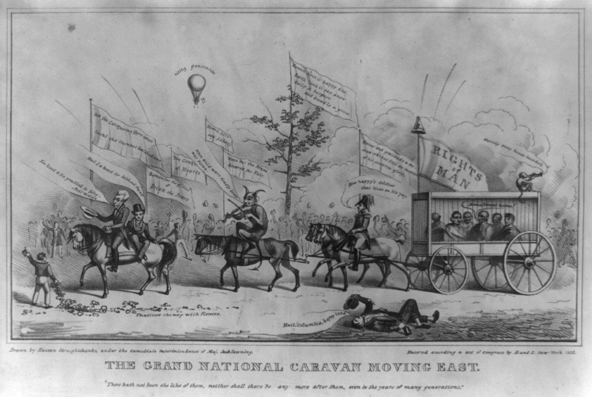

| Field | Detail |
| TOC Fit | Chapter 10 · Essay prompt 10.5 (Judging Jackson's Presidency) |
| Why Here | An opposition print turns Jackson’s 1833 tour of the Northeast into a mock royal procession, with Van Buren riding behind him, a devil fiddling, and a caged Indian in tow. Students can read it as an argument by its maker that Jackson’s popularity was hollow pageantry, and test its charges against the songs and banners it puts in the mouths of his followers. |
| Treatment | Public-domain image; song lines, banners, and caption as transcribed in the repository record |
In June 1833 Jackson made a triumphal tour of the Northeast, drawing large crowds in Baltimore, Philadelphia, New York, and Boston, where Harvard gave him an honorary degree. Vice President Martin Van Buren traveled with him, and opponents read the trip as a campaign to groom Van Buren as Jackson’s successor. At the same time, the Sauk leader Black Hawk, captured after the Black Hawk War of 1832, was being taken through eastern cities as a prisoner of war; he reached New York in the same week as the president. The print, entered for copyright in New York in 1833, is signed with a joke name and credited to the supervision of “Maj. Jack Downing,” a fictional Yankee commentator whose letters were popular newspaper satire. Its Biblical caption mocks the procession as something never seen before or since, and each figure sings a line from a well-known song. Editorial note. The text is reproduced from the Library of Congress catalog description of the print (a public-domain federal transcription) and should be checked against the image. The catalog gives the Biblical caption in two versions, once with “hath not been” and once with “hath been”; this reader follows the first, which matches the wording of Joel 2:2, but the image should decide. The Library of Congress suggests the caged figure refers to Black Hawk and attributes the drawing to David Claypoole Johnston, possibly with John Henry Bufford as printer; both are attributions, not certainties. CAUTION: This is an image made to persuade. Read it as the argument of Jackson’s opponents, not as a report of the tour. The caption and song lines were checked against the Library of Congress master image, which reads “hath not been”; four banner and ground inscriptions not in the catalog record were added from the image. Text transcribed for this reader from the repository image; illegible words are marked [illegible]. |
|
 |
|
UNIT 3 · AN EXPANDING NATION | HISTORY B17A | DANIEL GARZA, M.A.
|